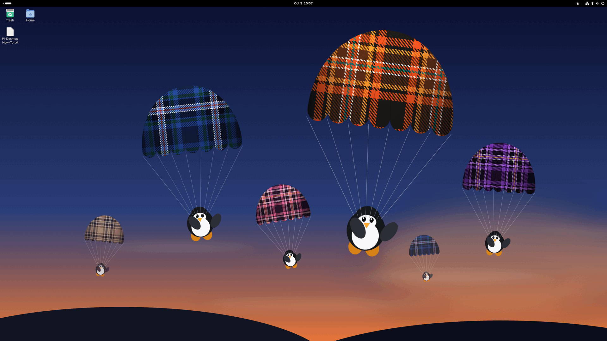

What it is
A GNOME 50 desktop image for the Orange Pi 5B (RK3588S), built from Ubuntu 26.04 packages with the Armbian build framework, on Armbian's Rockchip vendor kernel 6.1.172 plus eleven Pi-Desktop patches. Not affiliated with or endorsed by Canonical or Armbian. Not a Raspberry Pi product.
Everything below was checked on an Orange Pi 5B running the release candidate (2026-10-03: 78 of 79 first-boot checks passed; the one miss was a setting the tester had changed himself).
- 4K at 120 Hz over HDMI. The vendor kernel reaches HDMI 2.1 FRL with our clock patches; the three ways it failed on the way there (black screens, a hang on screen-off, a black screen after a monitor power-cycle) are fixed by kernel patches, each re-tested on hardware.
- Flicker-free. Arm's Mali user-space driver instead of Mesa panfork, and AFBC scanout rejected in the kernel. The Chromium typing and thumbnail flicker of 2.0.x is gone.
- Hardware video. Our rockchip-vaapi driver: 8-bit H.264, HEVC and VP9 in Chromium (and Chrome once installed); 10-bit HEVC and VP9 in Firefox once installed; mpv through VA-API, with profiles for DVDs and Blu-rays. AV1 is software.
- Wi-Fi joins WPA3 and WPA2/WPA3 networks. A one-branch bug in the vendor Wi-Fi driver refused every modern home network with Ubuntu 26.04's wpa_supplicant; fixed, and sent upstream (armbian/linux-rockchip#561).
- Bluetooth that survives Wi-Fi. The AP6275P boot-race and coexistence fixes from 2.0.x, carried over with the self-healing sentinel. The ten-second mute at every YouTube ad on a Bluetooth speaker is gone.
- Audio. PipeWire 1.6.9 with real-time priority from boot; the 3.5 mm jack works and follows plugging; Rhythmbox 3.5.1, Audacity, Brasero.
- Screensaver instead of blanking, lock on demand, a login screen at every boot after the first.
- Fixes you would otherwise find yourself. GUI password prompts that hang on Ubuntu 26.04 with a 6.1 kernel; a large file copy that could get the whole session killed; every board called "pidesktop".
- Small image, apps on first click. About 1.5 GB compressed. Firefox, LibreOffice, GIMP, Inkscape, Thunderbird, VSCodium and Google Chrome download from their own repositories on the first click.
- No snaps. No telemetry of our own. What the base still talks to is on the privacy page.
Honest scope
One maintainer, a vendor 6.1 kernel, best effort. It ships a KNOWN-ISSUES file on purpose — we'd rather tell you what's rough than let you find out. Suspend is disabled. 10-bit video is Firefox-only. HDR on the maintainer's monitor stays pale, and that is the monitor. The board has two display outputs, HDMI 2.1 and DisplayPort over USB-C, nothing else; a passive HDMI-to-DisplayPort adapter cannot work on any computer.
Security updates for the Ubuntu packages come from Ubuntu's repositories for the life of 26.04. The kernel and boot packages are built from Armbian's branch and refreshed with Pi-Desktop releases for as long as Armbian builds that branch. Pi-Desktop's own packages are updated with releases. There is no guaranteed support period and no commercial product behind this. The security page says how to report a problem.
The recipe is public
Built on Armbian, by hook. Pi-Desktop images are built from pinned Armbian build-framework inputs. Armbian owns the RK3588 boot chain: U-Boot, partition layout, kernel branch, device trees, modules, firmware, board-support packages and the first-boot filesystem resize. Pi-Desktop changes one thing there, eleven kernel patches applied through Armbian's own userpatches mechanism, all published with the source. Everything else is a userspace layer applied through Armbian's late image hook, customize-image.sh, and every line of it is in the recipe repository. The images are credential-free: there is no default user or password, the first boot creates yours.
Don't trust the image; audit the recipe.
- Recipe — build config, customize script, overlay, kernel patches, package build scripts: defcom5-rockchip/pi-desktop-recipe.
- Kernel — Armbian's
rk-6.1-rkr7.2with the eleven patches applied, tagpi-desktop-4.0: defcom5-rockchip/linux-rockchip. - Video driver — defcom5-rockchip/rockchip-vaapi.
The legal page has the complete corresponding-source table, the licences and the trademark notes. The 2.0.x line on ubuntu-rockchip was retired at v2.0.2; the changelog has the history.